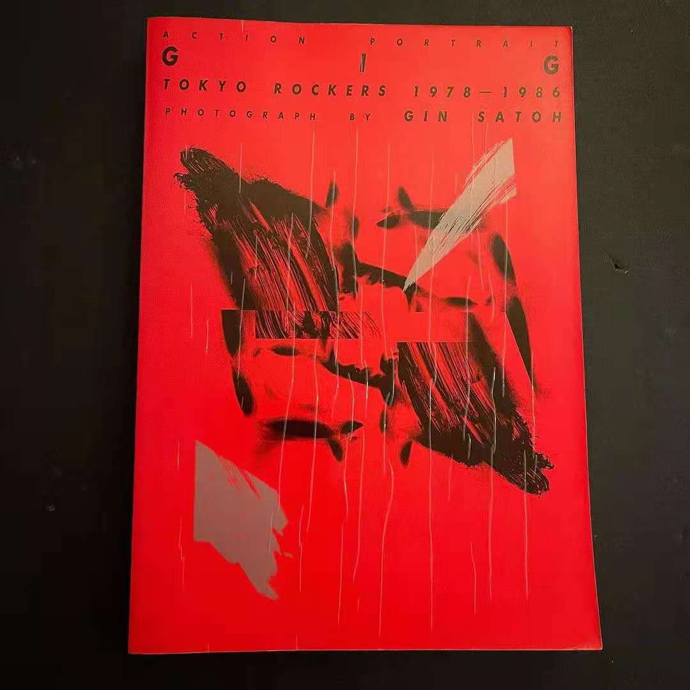
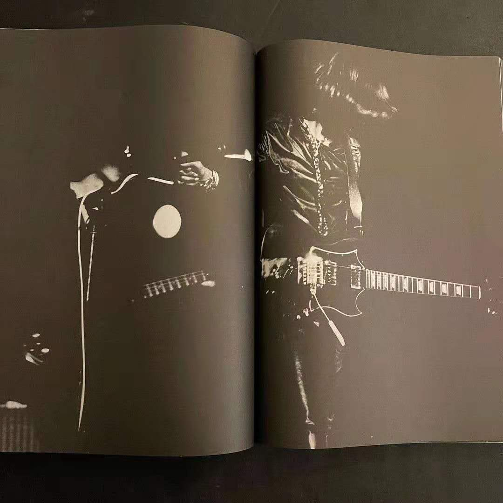
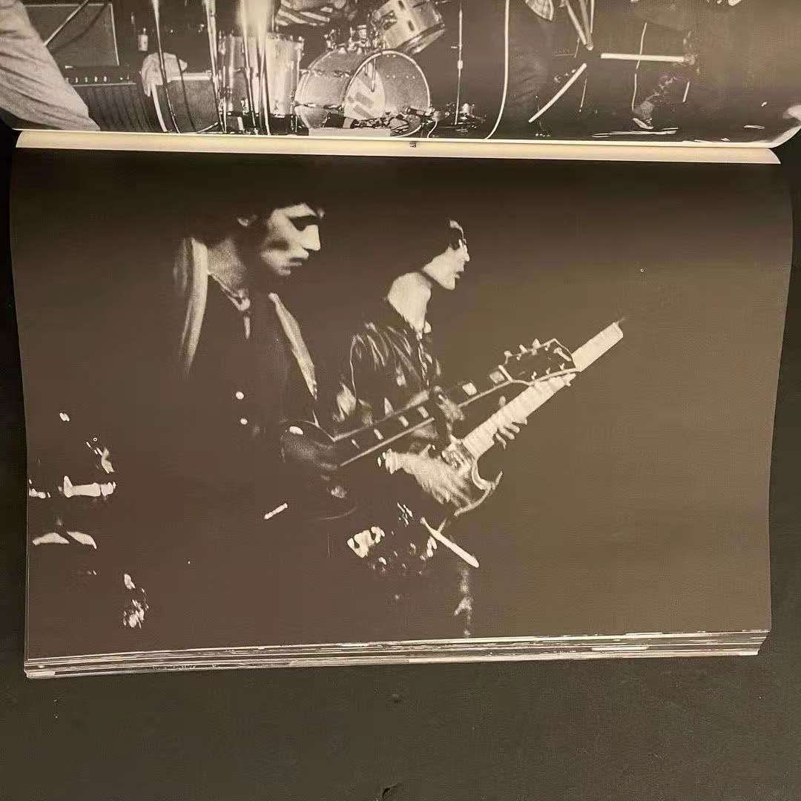
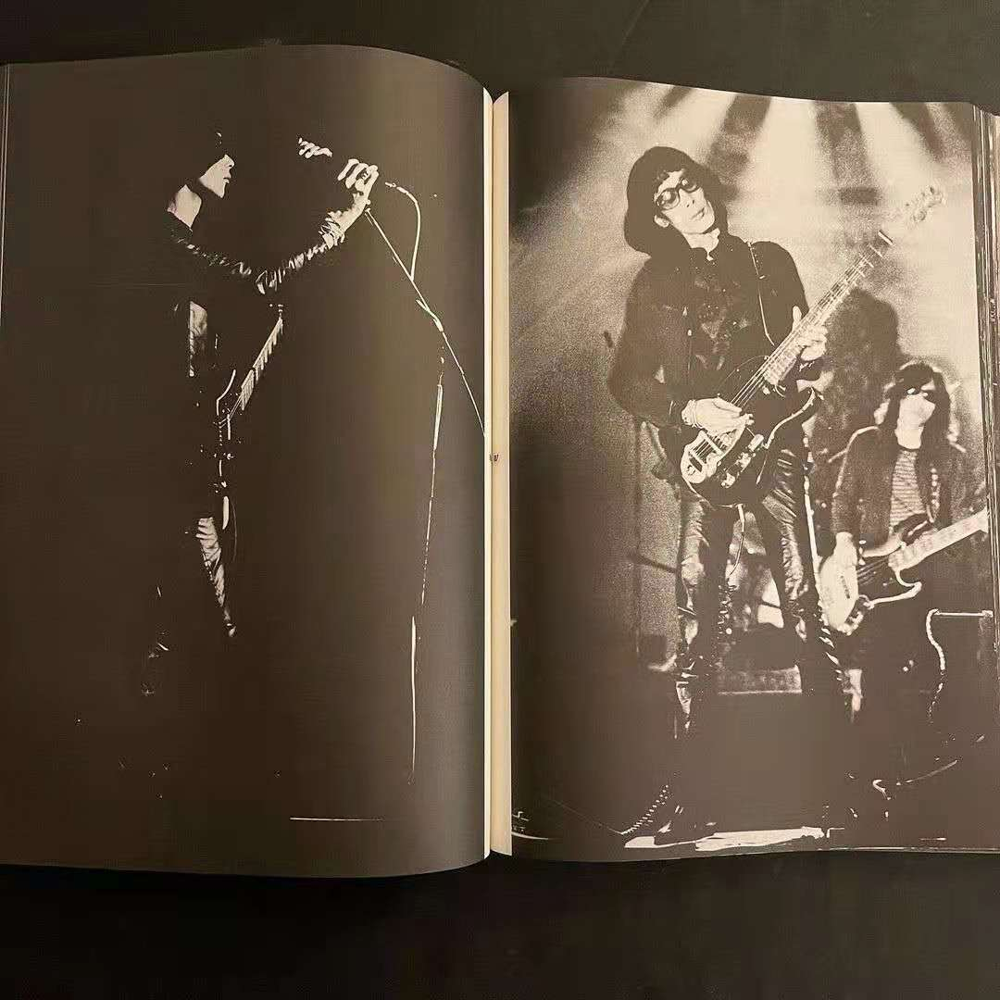

“1946年，阿尔托再次说起了这场战斗：‘……并且我写作只是为了说出，我什么也没做过，什么也做不了，并且，当我在做什么的时候，我其实一无所做。我的全部作品就基于并且只能基于这虚无，这杀戮，这熄灭之火，水晶和屠宰的混战；一个人一无所做，一无所说，但一个人受难，一个人绝望，一个人战斗，是的，我相信一个人其实战斗。——一个人会欣赏战斗，评判战斗，为战斗辩护吗？不。它会被命名吗？也不。 命名战斗，或许，就是杀死虚无。但首先是停止生命……一个人绝不会停止生命。’
——引号里来自阿尔托1946年7月27日致彼得·沃森的信，参见Antonin Artaud，OEuvres complètes，tome ⅩⅡ，236. 全部摘录自布朗肖所写的《无尽的谈话》中的一篇残酷的诗歌理性，飞行的强烈需求
从昨天开始我又开始着手做这个网站，其实一共前前后后花了一共不到5个小时，总是觉得 要花很多时间去做，但是每次都是很快，现在这个网站可以真的自由生长起来了，因为我联系 到了一些朋友。我一直是很不擅长去主动联系朋友的，我知道大家其实都是温柔的，并且热情。
四三说：
那我想到一件趣事 我之前在家听他们一张CD的时候 我爸以为我音箱坏了跑过来问我 还有一次也是在听他们的CD的时候 突然和一个朋友打了一通电话 然后发现她的背景里面正好也在放他们的音乐 虽然不是同一首歌也很模糊 但是感觉特别的和谐跟亲切的感觉 当时就觉得很神奇 他们的音乐时间都很长 然后通话时间也变得很长 到最后甚至都没有说话 就只在听两个听筒里面的回声 谁都不想把自己的音乐关了
昨天乌云茉莉还发来了一个杂志的Gin Satoh的摄影图片：    
头像是四人囃子猴子专辑的和小宇，还有现在说“其实我最喜欢的是浅川maki”的Nene，还有被形容为“一朵开在中文互联网与社交非网络的奇葩，牛皮鲜告示牌”的BinchOuTan（地球），还有火化耳朵的张铎瀚，还有硫酸饼干，写了小孔集的弗然，还有总是热情的朋友们。还有最近开始做《手册》杂志，并且在2020年末开始全球征稿的废船，当然还有空之穴（hole in the sky），阿一和好几个秘密的网友，一起给朋友们翻译了大量优质内容，关于裸身集会的，也有 关于别的容易被忽视的日本乐队的内容。
当然还有最棒的裸身集会脸书秘密小组，Jim Ranhis称之为Les Rallizes Dénudés Facebook community，组成员还有久保田麻琴，作为裸身集会大部分成员的朋友和曾经的成员，他在小组里也比较活跃。
另外有一些重要的文章，很多朋友应该都看过了，可以小总结一下：
最后列出一些前辈：
1. 一个已经消失的网站“lesrallizesdenudesexperience.web.fc2.com”，资料我已经放在了本站的concerts一栏
2. 收集了几乎全部图文资料的rallizes.blogspot.jp的ubud，大家都非常熟悉。在web.archive的时光机中可以看到ubud曾经的一个更加早期的网站 裸のラリーズ：Unofficial
3. 高田清博（Kiyohiro Takada）(Doronco)
4. 久保田麻琴（Makoto Kubota）
5. 建立了JapanoiseWeb的Maq Ito
6. Sundays&Cybele的坪内和夫（Kazuo Tsubouchi）（他正在視線X做裸身集会纪录片）
以上列出的几个前辈在存档上已经做到了极致，对于裸身集会来说，可能都不存在存档热这一说法，我们都知道，存档已走到了尽头。所以本站目前，到未来，将要做的或许是丢去个人生平历史的一种集体书写。情境主义国际的Asger Jorn在他的文章Diverted Painting（Peinture detournee，May, 1959）中说“所有文化的元素，都必须reinvested，或者消失！”对于本站来说会是这样的。
最后贴一首诗：
不变的事物 美妙的事物 未变 且 美妙的事物 比无常易逝中所见的美妙远为缜密严谨的事物 夜的领域 空间与维度 还有从那其中的逃逸 作为结果的逃逸 无意识的逃逸 当完成意识到的逃逸时 逃逸早就已经在预定的路上 消失殆尽了吧 ——水谷诗，想要知道更多的裸のラリーズ（水谷孝×汤浅学fax通信）
我们永远不会听完，我们永远听不完，我们不想听完，我们也不能够听完，那个东西弥漫到了诗意空间的四处。
+++LRDA is licensed under a CC BY-SA 4.0.+++ +++anti-copyright+++